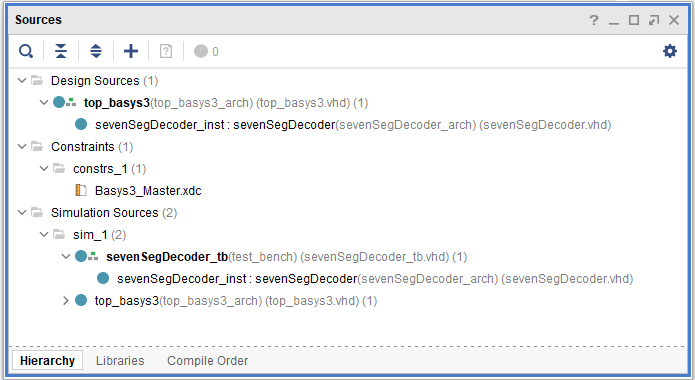

Lab 2 - Seven Segment Display Decoder#
Due: Lesson 17
Overview#
In this lab you will implement the seven-segment display decoder in VHDL to display a hexadecimal digit. The hex digit will come from a hardware-based binary to hex converter, which you will develop.
A four-bit value will be input using switches. Upon pressing the center button, a seven-segment display will output the correct hex digit, Fig. 30

Fig. 30 Binary-to-hex displayed on seven-segment display#
Objectives#
Develop a hardware-based binary to hex converter
Display switch value on seven-segment display
Supplies#
Basys3 board
Collaboration#
Your instructor will inform you if you can work in pairs or not. For all assignments in this course, unless otherwise noted on the assignment, you may work with anyone. We expect all graded work, to include code, lab notebooks, and written reports, to be in your own work. Copying another person’s work, with or without documentation, will result in NO academic credit. Furthermore, copying without attribution is dishonorable and will be dealt with as an honor code violation.
Background#
When creating simple embedded digital designs, a seven-segment display
is a common way to display numbers or simple letters to the end-user. In
this lab, you will design a seven-segment display decoder. This decoder
takes a 4-bit binary input, and produces 7 bits that indicate whether
each “segment” of the display is on (0) or off (1).
There are seven “segments” (labeled a – g, see Fig. 31) and one decimal point (we will ignore the d.p. in this lab) in a seven-segment display.

Fig. 31 Labeled segments in display#
On our Basys3 board an anode determines which of the displays are on, while cathodes allow you to turn on each individual segment, Fig. 32

Fig. 32 Basys3 7SD cathodes and anodes.#
Said differently, you disable an entire display by connecting it to power, aka 1.
Placing a 0 on a segment will cause it to light up, while a 1 will keep the segment dark.
This is called “active low.”
For example, to display the number “0”, a logic 0 must be placed on segments b-g,
while segment a will be a logic 1.
In this way, you can display every hexadecimal digit: “0” - “F” as shown in Fig. 33

Fig. 33 Hexadecimal digits on a seven-segment display#
Pre-lab#
First, complete the truth table for converting binary inputs to a hex output on the display.
Excel template is available on Teams!
Second, use this truth table to generate logic equations for each output.
Lab#
Now that you have Boolean equations established for each of your seven segment outputs, it is time to implement them in hardware with VHDL!
Setup Vivado Project#
Due to issues with the automated build process in ICE3, we recommend manually creating a Vivado project and then adding the source files manually.
Accept the assignment and clone the newly created repository
Open Vivado
Follow instructions in Create a new Vivado Project. Suggested project name is binaryHexDisp
Follow instructions in Manually add files to Vivado Project to add everything in
src/hdl/to your projectEnsure your source hierarchy looks like you expect.
Edit the file headers as necessary. Then commit your changes with git.
Top-level file#
The functionality we are looking for is this:
We have opted to use switches for our input and the seven segment display as our output. A button press will activate the display.
In order to make this happen we need to use a top level design to wire our inputs and outputs as well as some internal logic. We will make the seven segment display an internal component - like we did with the half-adder in ICE3 - since it is more complex and should be tested independently.
The repository you cloned and built has a top-level file already defined. The schematic is shown in Fig. 34.
Warning
This diagram is mislabeled. Do not invert the vector between o_S and seg.
Just like your truth table, s_G should be the MSB.
New picture will be posed soon.

Fig. 34 Top-level schematic#
You need to connect your 7SD component to four physical switches (sw) and the seven cathodes (seg) of a seven-segment display (7SD). Also wire a push button (btnC) to activate the 7SD by sending a low signal to the anode. Since the button itself is active-high, an inverter is required.
The entity is provided for you, but you must complete the architecture.
Note
The entity interface has been designed so that the port names match exactly
what the constraints file (Basys3_Master.xdc) is already using.
A note on <= vs. =>#
When connecting an input to a wire, the input must be on the right side.
In the below statement, btnC is the input and w_7SD_EN_n is
the wire connecting the button to the 7SD active-low enable pin:
w_7SD_EN_n <= not btnC;
In this case, <= is an assignment statement and connects the button to a wire.
To connect the other end of the wire and enable the (anode) pin, you have to
use an => because the => is used for case statements, array assignments,
and component port mapping.
an <= (0 => w_7SD_EN_n, others => '1');
In the above statement, the signal an is an output, so it must be on the left side.
We declared an earlier as a 4-bit vector. The right side is using the () aggregate operator
to concatenate bus signals; in this case, the LSB is assigned to w_SD_EN_n.
The keyword “others” refers to any bus signals not otherwise explicitly listed,
so it sets the other three bits to 1.
Another way to describe the above connections is as follows:
an(0) <= w_7SD_EN_n;
an(1) <= '1';
an(2) <= '1';
an(3) <= '1';
Follow the comments in
top_basys3.vhdto complete the architecture.
Seven Segment Display Decoder#
For better modularity, we will implement our seven segment display decoder as its own component.
We have provided a template file in Teams under Files > Handouts and Resources > Templates.
Save a copy of ECE_template.vhd as a file named sevenSegDecoder.vhd into your Lab2
src/hdl/folder.Save a copy of ECE_template_tb.vhd as a file named sevenSegDecoder_tb.vhd into your Lab2
src/hdl/folder.Add your sources to Vivado. Remember to leave “Copy sources into project” unchecked. See Manually add files to Vivado Project
Edit the file headers as needed.
Find and replace all instances of “ECE_template” with
sevenSegDecoderWithin Vivado, open one of your VHDL files and then type
CTRL+SHIFT+Ror click on Edit→Replace in FilesFill in the find and replace text boxes as required. Make sure to check all of the sources you want to change:

In the message area (bottom of Vivado screen) click “Replace All”

7SD Entity#
How do we determine which should be out most signifigatn bit (MSB): \(Sa\) or \(Sg\)? Fundamentally, we want to adhere to the constraints file. Referencing Basys3 I/O (this is a great page to know about!!!) and comparing it to Basys3_Master.xdc we can see that:
The pin
W7is connected to cathodeCA, which we have calledsA..xdc shows
PACKAGE_PIN W7 [get_ports {seg[0]}], sosAis the LSBThe pin
U7is connected to cathodeCG, which we have calledsG..xdc shows
PACKAGE_PIN U7 [get_ports {seg[6]}], sosGis the MSBThis already corresponds with how our Prelab truth table is organized!
Create your interface (ports) for your sevenSegDecoder according to Fig. 35
Warning
This diagram is mislabeled. c_Sa should be 0 and c_sG should be 6. New picture will be posed soon.

Fig. 35 sevenSegDecoder entity and architecture#
The interface for the sevenSegDecoder entity is shown in blue and the architecture in purple.
The input, i_D, is a bus of four wires.
The output, o_S, is a bus of seven wires.
This can be created in VHDL by using a std_logic_vector signal type.
For instance, i_D could be created in the port statement with the following:
i_D : in std_logic_vector(3 downto 0)
Remember, the i_ follows the naming convention provided in the header
that indicates the signal is an input. The statement above 3 downto 0
indicates that BIT3 is the MSB and BIT0 is the LSB. You could easily
reverse this by swapping the locations of the two numbers.
To access each wire from the bus you created simply refer to the bit
number in parentheses. For instance, i_D(3) refers to the MSB of the
input, D.
7SD Architecture#
After you have created your component interface, you need to describe
the architecture. Fig. 35 shows that the output of
the combinational logic produces a signal for each 7SD segment (c_Sa …
c_Sg). These combinational signals (denoted by the c_ at the
beginning) are wired to each bit of the output segment bus (o_S). The
bit numbers are labeled in the diagram. For instance, BIT0 of o_S is
wired to c_Sa.
For clarity, declare intermediate combinatorial signals (e.g.,
c_Sa) that break out outputSand set them to a default value of1(off). This should be done before begin.There are no PORT MAPS or PROCESSES needed for this module, so you can delete those sections.
In the CONCURRENT STATEMENTS section, map the output
Sto the signals you created above. For instance:
o_S(0) <= c_Sa;
Behavioral vs. Structural modeling#
There are two basic philosophies for modeling digital architectures:
structural describes how the module would be composed as a hierarchy of simpler modules.
behavioral describes what the logic does in terms of inputs and outputs.
We will be using behavioral modeling in this lab.
For instance, you could derive the simplified Boolean expression:
This could then be implemented behaviorally with the following VHDL code:

Notice that the logic for the intermediate signal c_Sa is described in
terms of AND, NOT, and OR gates. Also notice that the statement spans
multiple lines and is ended by a semicolon. It is helpful to break
statements like this into multiple lines so that they are easier to
read. Each implicant from the simplified Boolean expression has its own
line and is surrounded by parentheses (use SPACE to make it more
readable).
There are many ways to describe a behavioral model, however. Contrast the above behavioral model with the following one:

The behavioral model describes the logic just like the truth table. In
this case, it essentially creates a lookup table (LUT) where the ‘1’s
are identified, and everything else is ‘0’. Note, how using a
std_logic_vector for i_D allows us to compare the input to a 4-bit
hex value(denoted by the ‘x’) instead of comparing all of the individual
bits. This is one of the advantages of using that signal type.
Now that you have an understanding of how to implement behavioral models in VHDL, implement all seven of your outputs for sevenSegDecoder.
Use behavioral modeling with AND, NOT, and OR gates for at least two of them.
Use behavioral modeling with a LUT for at least two of them.
Which model method do you think is easier to use for implementing your outputs?
Implement the remaining outputs with your preferred choice.
Test sevenSegDecoder#
If you skipped the part above about bringing in the ECE_template_tb.vhd, do it now.
Copy in the port information for your sevenSegDecoder component.
Declare a bus (std_logic_vector) or series of signals for the switch inputs.
Declare a signal vector to connect to the segment outputs (e.g.,
w_seg) from your componentPort map your component instance to the wires you creates for the switches and the 7SD segments.
Tip
The keyword OPEN can be used if you prefer to not wire a port to something (e.g., you will read or manipulate the ports directly in your simulation)
Create your test plan process. Remember, you can use hex values with busses, such as
sw <= x"F".Add enough assert statements to cover the truth table.
Fix any syntax errors, and run the simulation.
If sevenSegDecoder_tb is not set as the top of your simulation hierarchy, right click on it and choose “Set as top.”
Make sure the simulation results match your Prelab truth table, and then take a waveform screenshot for your report.
Hint
You may need to reverse the order to make your sim match the truth table: (right click-> Reverse Bit Order).
Complete top level#
The top level VHDL file is what connects your component to the Basys3 development board. Fig. 34 is shown again below.
Warning
This diagram is mislabeled. Do not invert the vector between o_S and seg.
Just like your truth table, s_G should be the MSB.
New picture will be posed soon.
As can be seen in the figure, you need to connect your 7SD
component to four physical switches (sw) and the seven cathodes (seg) of
a seven-segment display (7SD).
You also need to wire a push button (btnC) so that it can be used to activate the 7SD by sending a low signal to the anode. As discussed in the Background Fig. 32 the anode determines which of the displays are on, while the cathodes allow you to turn on each individual segment.
Since the button itself is active-high, an inverter is required. The other 7SDs (display 3, 2, and 1) are disabled by connecting them to power.
Note
The entity interface has been designed so that the port names match exactly what the constraints file (Basys3_Master.xdc) is already using.
You simply need to uncomment the lines in Basys3_Master.xdc that you need to use.
Use the provided top_basys3.vhd file to complete the top level architecture.
After you finish, your source hierarchy should look something like this:

Implement in hardware#
Synthesize and implement your design.
Look at the RTL schematic: In RTL Analysis in the Flow> Navigator on the left side of the window.
Is this what you expect? Did Vivado implement the circuit like you thought it would?
Double click on the sevenSegDecoder component. Did Vivado implement the circuit like you thought it would?
Generate the bitstream (.bit) file and download it to your FPGA. Verify the hardware functions as expected; demo to your instructor.
Commit the bitstream to your repo
Deliverables#
Below are the deliverables and point distributions for the Lab 2:
Deliverable |
Points |
|---|---|
Prelab |
15 |
Hardware Demo |
30 |
Written Report |
30 |
Passing GitHub Action |
25 |
Documentation statements will be in the README for any help on the code files. Otherwise, the statement will be submitted on Gradescope (for the prelab and report).
Prelab#
See instructions at the top of this lab. Submit on Gradescope.
Hardware demo#
You have to hold the center push button down for a 7SD to show your output. (10 pts)
The correct hex digit is shown based on the switch positions for all input possibilities. (20 pts)
Demo can be performed live with an instructor (preferred) OR submitted via Teams
Written Report#
Rubric and template on Teams. Submit on Gradescope.
Git and GitHub Actions#
sevenSegDecoder.vhd, sevenSegDecoder_tb.vhd, and top_basys3.vhd included in
src/hdl/Extraneous comments are removed and code is formatted in a sane manner
Basys3_Master.xdc file included in
src/hdl/Bitstream (.bit) file used for hardware demo in repo (in default location)
Include a
## Documentationsection in the READMECommit messages are useful in tracing the development of the project